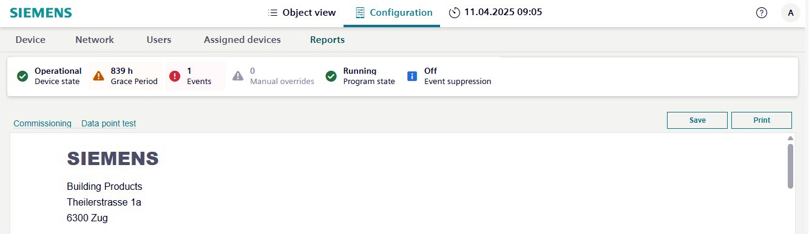
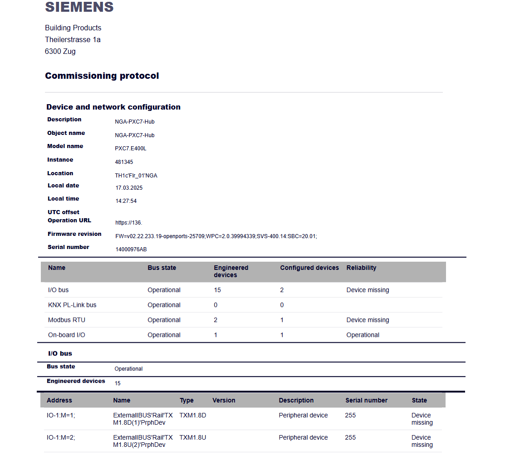
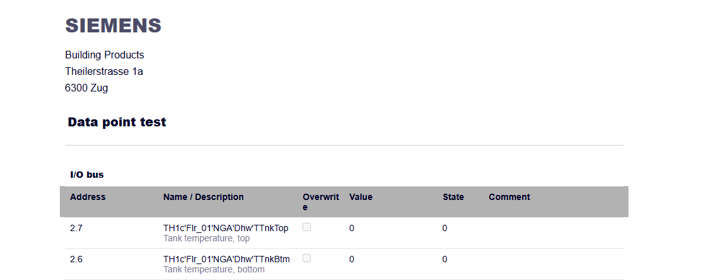

Reports tab
The following reports can be displayed, printed and / or saved to an Excel spreadsheet (.xls):
- Commissioning
- Data point test

Commissioning
The commissioning report contains detailed information on the field buses connected to the device.

Data point test report
The point test report contains detailed information on all data points in all existing field buses.

Column | Description |
|---|---|
Address | Desigo devices use a modular architecture that allows various input and output modules to be plugged into the device. Each module has its own address, which is determined by the position of the module and the peripherals within the device. For example, 2.7 = Module 2 Position 7. |
Name/ Description | Name: Shows the technical address in the Desigo system. Description: Shows the descriptive data point text. |
Overwrite | In this state, the data point value has been manually overwritten by a user or operator. The check box is enabled. |
Value | The current value refers to the actual, real-time value of a data point or parameter being monitored or controlled by the system at the time of the snapshoot. |
State | The commissioning state is used during the initial installation, configuration, and testing of the Desigo system. 0 = Not checked 1 = Failed 2 = Passed |
Comment | Shows an additional comment for the corresponding data point. The comment is entered in the Comment property. |